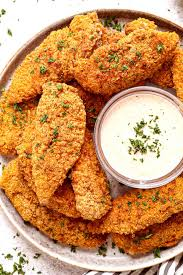
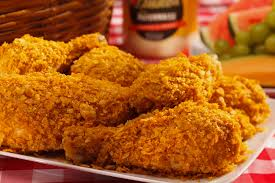

Fried chicken
Fried chicken is één van mijn favoriete gerechten. Het is krokant van buiten en lekker sappig van binnen. De kip wordt meestal gekruid met verschillende specerijen en daarna gefrituurd, wat zorgt voor de heerlijke smaak en structuur. Wat ik zo leuk vind aan fried chicken is dat het in veel landen op verschillende manieren wordt gemaakt. Soms is het pittig, soms extra krokant, maar het is altijd super lekker. Het is perfect als snack of als maaltijd met frietjes of saus erbij. Voor mij is fried chicken echt comfort food dat ik altijd kan eten!



